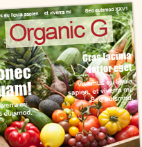

Curiosidades
-
Semana da Climatização e dos Electrodomésticos
Sabias que uma casa mal isolada, necessita de mais energia? No Inverno, arrefece mais rapidamente e pode apresentar condensações no interior. No Verão, aquece mais e em menos tempo.
Sabes o que é consome mais energia em nossa casa???? O frigorífico/combinado (22%), aquecimento (15%), iluminação /12%), audiovisuais (9%)
-
Jornada sobre incêndios florestais
No âmbito da semana do Ambiente, realizou-se uma palestra subordinada ao tema " Incêndios Florestais". A iniciativa foi dinamizada pelos alunos finalistas do curso, e decorreu no dia 14 de Março, no auditório da biblioteca da Faculdade de Ciências e Tecnologias da Universidade Nova de Lisboa.
-
Revistas e Livros
Já podes aceder aos livros e revistas mais recentes na tua biblioteca!
 -
Bar da Escola
Movimento TWIST
Entrega no bar pilhas que não utilizes e poupa energia!
-
Horários
SECRETARIA09.30h às 12.30h e 14.00h às 16.30h
CONTABILIDADE09.50h às 12.00h e 14.00h às 16.30h
CENTRO DE RECURSOS09.00h às 17.30h
REPROGRAFIA08.45h às 13.00h 14.00h às 18.00h
-
Mantem-te em contacto!
Email:
info@eped.ptMorada:
Largo Bulhão Pato, nº 56
2825-114 Monte de Caparica
Quinta da TorreTelefone:
+351 212 946 040